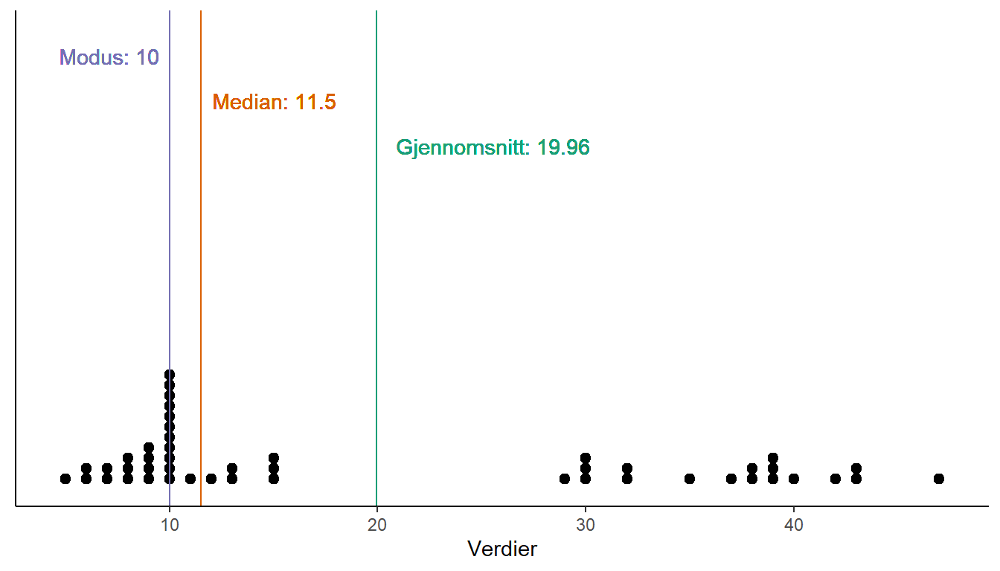

1 Datahåndtering og Data i regnearkprogrammer
Excel er et av flere programmer som du kan bruke for lagre data, lage figurer, gjennomføre analyse og beregninger ved hjelp av data. Det finnes flere alternative til excel, de fleste har lignende funksjonalitet hvor data i form av tall eller tekst kan mates inn i celler. Celler kan ha funksjoner som beregner eksempelvis tall basert på andre celler. Excel er per i dag, hva vi vet, det program med flest celler! Over 17 milliarder celler. I tillegg har excel over 400 funksjoner som kan brukes for å beregne eller manipulere data. Alt dette gjør excel til en versting når det gjelder å skape trøbbel!
Her finner du en kort forelesning om data i excel.
Et kjent problem i bruk av excel er konvertering av tekst til datoer. Dette problemet er av betydelse bland annet når man studerer gener hvor noen navn på gener ligner på datoer (eks. SEPT1). Å bruke et excel-dokument for datalagring, bearbeiding av data og beregninger kan gi uoversiktlige konsekvenser da små tastefeil kan gi store konsekvenser, noe som oljefondet og oljedirektoratet har fått erfare (se her, og her).
Det finnes måter å bruke excel (og lignende programmer) som sikkerstiller at dette, og andre problemer ikke påvirker analyser og resultater. Den enkleste måten er å være konservativ: Excel (og lignede programmer) fungerer utmerket til å registrere og lagre data. Ønsker du å leve livet mer risikofylt bruker du excel for å lage figurer, gjennomføre beregninger, beregne statistikk eller innhente data fra brukere. Et prinsipp i databearbeiding er å holde rådata adskilt fra bearbeiding og beregning. For å hedre dette prinsippet bør vi i det minste ha data for lagring i en adskilt datafil.
Når vi lagrer data i excel ønsker vi å skape lykkelige datasett. Her finnes en analogi til en kjent roman, Anna Karenina, hvor forfatteren, Leo Tolstoy åpner med å si at “Alle lykkelige familier er like; hver ulykkelig familie er ulykkelig på sin egen måte.”. Dette kan sies å være sant også for data (Wickham 2014). Lykkelig data er konsekvent, “tidy” hvilket betyr en rad per observasjon og en kolonne per variabel. Enkle, men beskrivende navn på variabler på første raden, ingen tomme celler, og ingen beregninger. Ulykkelig data kan være ulykkelig på så mange forskjellige måter. For eksempel, vi kan ha flere variabler per kolonne, spesialtegn i variabelnavn eller celler, miks av datatyper, flere datasett per fil, osv.
Wickham, Hadley. 2014. “Tidy Data.” Journal of Statistical Software 59 (10). https://doi.org/10.18637/jss.v059.i10.
Når vi bruker excel (eller lignende programmer) for å mate inn data kan vi bruke datavalidering for å sikkerstille at den data vi fører inn er hva vi forventer. Datavalidering innebærer att hver kolonnen, eller rad får et sett med regler som inndata må ha. F.eks. når vi taster inn data fra et VO2maks test vet vi att data ikke kan være negative, og de overstiger mest sannsynlig ikke 97 ml kg-1 min-1. Vi kan med denne kunnskapen skape en regel som sier at vi tillater desimaltall mellom, la oss si, 25 og 100.
Hvert datasett bør ha en kodebok. En kodebok inneholder en beskrivelse av variablene som er representert i datasettet. I excel kan vi bruke en ny fane får å legge in denne informasjonen. Eller enda bedre, vi skaper en .txt-fil som beskriver datasettet. Kodeboken hjelper deg og de du samarbeider med å forstå hvilke data som du har.
Excel ønsker å lagre dine filer i formatet .xlsx, dette er ikke alltid hva du ønsker. xlsx formatet inneholder formatteringer som ikke er mulige å føre over til ander programmer. Et bedre alternativ er lagre data som csv-filer. Dette formatet er åpent og kan leses av flere programvarer, også i fremtiden. Det å lagre data i csv-filer gjør det også vanskeligere å lagre annen data i de samme cellene som du har tall eller tekst, for eksempel ved å bruke farge eller tekstformatering. Slike «data» vil ikke bli behandlet i andre programmer hvor du ønsker å arbeide videre.
Les mer om Best practice i bruk av spreadsheets (Broman and Woo 2018).
Broman, Karl W., and Kara H. Woo. 2018. “Data Organization in Spreadsheets.” The American Statistician 72 (1): 2–10. https://doi.org/10.1080/00031305.2017.1375989.
1.1 Dataanalyse i praksis
I dette emnet så foreslår vi at dere bruker excel (eller lignende programmer) for å mate inn og lagre data, og Jamovi for å gjennomføre dataanalyse og lage enkle figurer. Denne kombinasjonen er mer enn nok for å på en god måte klare å ferdigstille et vitenskapelig arbeid hvor du forventes å presentere og tolke data fra et eksperiment eller observasjoner. Vi foreslår dette fordi kombinasjonen er fritt tilgjengelig for deg i et fremtidig arbeidsliv hvor du ikke vil ha tilgang til mer kostbare programvarer, og det finnes muligheter for å gå videre til mer avanserte programvarer (f.eks. R) med utgangspunkt i Jamovi.
Her finner du en forelesning om Dataanalyse i praksis.
En dataanalyse i praksis er ikke begrenset til hvilke programvarer du bruker. Det å lære å være systematisk og strukturert kommer å spare deg og dine medarbeidere mye hodebry og tid. En systematisk og organisert dataanalyse er også reproduserbar. Når vi snakker om reproduserbar dataanalyse i denne sammenhengen mener vi at du kan gi din data og analysene til en tredje person som i sin tur kan spore de valg du gjort i dataanalysen.
Reproduserbar dataanalyse er noe som mange snakker om nå da mange mener vi står mitt i en replikasjonskrise. Vitenskapelige funn er ikke alltid mulige å bekrefte i nye studier og det viser seg at andelen funn som ikke kan bekreftes er urovekkende mange! Forskjellige problemer og løsninger er foreslått for å lage bedre vitenskap og en stor del av dette går ut på å gjøre vitenskapelig analysearbeid mer transparent.
En reproduserbar dataanalyse inneholder all informasjon som kreves for å gjenskape analyseresultatene. En transparent dataanalyse inneholder også beskrivninger av hvorfor og hvordan man valgt å lage analysen på en gitt måte. For å gjøre dette mulig så kreves ytterligere struktur til et prosjekt.
Et enkelt oppsett kan være å tenke på dataanalysen som en isolert mappe på din PC. I mappen finner man alt som kreves for å gjenskape eller forstå din analyse. Her finnes:
Rådata: Data som er urørt etter det at man matet inn eller innhentet den i forskjellige programmer osv.
Delvis bearbeidet data: Data som er organisert for data analyse
Analysefiler: Filer som er kan lese til eks. Jamovi og inneholder analyser av din data
Rapporter og figurer: Disse er sluttprodukter av deres arbeid, disse kan settes sammen til eks. en bachelor-oppgave.
For å beskrive alle disse delene bør du også ha en fil som beskriver de forskjellige filene i analysen og den overordnede hensikten med hele prosjektet. Denne informasjonen kan beskrives i en fil som vi navngir README. En README-fil bør skrives i et format som ikke krever spesielle programvarer for å lese (eks. .txt). I presentasjonen finner dere et eksempel på en README-fil for et prosjekt in progress. README-filen er et levende dokument og bør gjenspeile forandringer i prosjektet, en overskrift med oppdateringer kan hjelpe å holde styr på fremgangen i prosjektet.
Til sist bør vi vurdere hvordan vi navngir prosjekter. Da disse bør være isolerte (self-contained), og inneholde all informasjon så bør også mappen/prosjektet ha et navn som beskriver innehold. Unngå eks. Prosjekt1, Prosjekt2 osv. Prøv istedenfor å lage beskrivende navn, noe som gir en hint om hva prosjektet ønsker å gjøre eller besvare.
1.2 Beskrive data
Her finner du en forelesning om beskrivende statistikk.
Vi kan begynne med å sette beskrivende statistikk i konteksten av målet med mye av de statistiske analysene i vitenskapelig arbeid. Her ønsker vi ofte å si noe om en “populasjon”, dette gjør vi basert på et “utvalg” som blir brukt for å skape noen form av “modell” av populasjonen. Målet med statistikken er å si noe om noe som vi ikke observerer basert på noe som vi observerer! Vi vill komme tilbake til detaljene i dette senere i denne boken.
Målet med den beskrivende statistikken er som Thrane sier, “å forenkle en stor uoverskuelig mengde informasjon”, som kan være vår data. Dataene består av variabler, innen forskningens verden beskriver en variabel et fenomen vi er interessert i å studere. En variabel bygges gjennom operasjonalisering, et teoretisk konsept kobles til en målbar enhet som i sin tur blir til en variabel i våres datasett.
Vi beskriver de data og dermed variablene vi har på en måte som gir økt forståelse for dess karakteristikk. En slik karakteristikk er dataenes sentraltendens (Figur 1.1). Et mål på sentraltendens er gjennomsnittet som er den verdi som balanserer verdiene i dataen. Dette betyr at like mye vekt finnes på begge sider av gjennomsnittet i formen av tallverdier. Median er et annet mål på sentraltendens, her balanseres isteden antall verdier. Vi rangerer verdiene i dataen fra store til små og setter median til den verdi som er midten av datasettet. Modus er et annet mål på sentraltendens, her finner vi det tall som finnes flest ganger i datasettet.
Thrane introduserer noen matematisk notasjon i en fotnote. Jeg ønsker å formidle at dere ikke trenger å være redde for disse formlene. Statistikken er full av matematisk notasjon og med en grunnleggende forståelse kan vi lese mye av den. En noe mer komplisert formel for gjennomsnittet kan gis som
\[\bar{x} = \frac{\sum_{i=1}^{n}{x_i}}{n}\]
hvor \(\bar x\) står får gjennomsnittet av variabelen \(x\). Summen av \(n\) antall observasjoner over et indeks \(i\) som starter med tallet 1 for variabelen \(x\) skrives som \(\sum_{i=1}^{n}{x_i}\). Summen delt på antall observasjoner \(n\) gir oss gjennomsnittet.
Forskjellen mellom gjennomsnitt, median og modus sier noe om hvilken informasjon vi trekker ut fra dataene. Gjennomsnittet måler tallverdier, medianen måler rangering og modus måler forekomst av spesifikke tallverdier. Mest informasjon finner vi i data som kan beskrives på en skala hvor avstand mellom verdier er lik over hele skalaen og det finnes et absolutt nullpunkt. Denne typen av data kan beskrives som forholdstallsnivå (ratio scale). Når dataene savner et absolutt nullpunkt sier vi at vi har data på intervallnivå. Informasjonen som vi har på forholdstallsnivå og intervallnivå kan reduseres til kategorier hvor informasjon om avstand mellom tallverdier forsvinner. For eksempel kan vi klassifisere gjennomsnittlig dagtemperatur til varm (> 18°C), lunken (< 18°C) og kald (< 0°C). Rangering er fortsatt mulig, varm temperatur rangeres over kald, men avstand mellom kategoriene gir ikke mening. Vi har nå skapt en variabel på ordinalnivå hvor verdier er ordnet, men savner sammenligningsbare avstander mellom verdiene. Til sist kan vi snakke om et nominalnivå, her finner vi kategorier som savner rangering (mann/kvinne, kjønn osv.). Denne oppdelingen er en grunn til klassifisering av forskjellige datatyper. Numerisk data kan kategoriseres som intervalldata og forholdstall, kategorisk data kan beskrives som mulig eller ikke mulig å rangere (ordinal og nominalnivå). Datatyper bestemmer hvilke analyser vi kan bruke for å forstå dataene.
Kategorier er vanskelige å gi et gjennomsnitt da tallverdien i seg ikke er av betydelse, isteden finnes informasjonen i rangering eller forekomst. Andeler kan hjelpe oss å bedre redusere kategorisk data til overskuelig informasjon. Data som finnes i kategorier kan beskrives ved hjelp av andeler av en total. Dette er den mulighet vi har for å sammenstille forekomst av kategorier.
1.2.1 Variasjon
En variabels variasjon kan også beskrives, med begrensinger i hvilken type data vi har. I numerisk data på kvote eller intervallskala kan vi beskrive gjennomsnittlig avvik fra gjennomsnittet. Denne kvantiteten er utrolig viktig innen statistikken da den blir brukt for å kvantifisere bland annet usikkerhet. For å beregne avstanden fra gjennomsnittet bruker vi avstanden i kvadrat
\[(x_i-\bar{x})^2\]
hvor \(\bar{x}\) er gjennomsnittet og \(x_i\) er en enkelt observasjon. Et gjennomsnitt av summen av alle avvik (\(s^2\)) fra gjennomsnitt i kvadrat kan skrives som
\[s^2 = \frac{\sum{(x_i-\bar{x})^2}}{n-1}\]
Her bruker vi \(n-1\) for å få et tall på variasjonen i utvalget som ikke skiller seg betydelig fra populasjonen1. Det vi har beregnet her er variansen, for å sette variansen på den samme skalaen som gjennomsnittet bruker vi
\[s = \sqrt{\frac{\sum{(x_i-\bar{x})^2}}{n-1}}\]
Dette tall (\(s\)) kalles standardavvik, dette er det gjennomsnittlige avviket fra gjennomsnittet på den samme skalaen som gjennomsnittet. Standardavviket er også et tall som vi vil høre mye om når vi oppdager statistikken videre. Ved hjelp av gjennomsnittet og standardavviket har vi tilstrekkelig informasjon for å lage mer eller mindre kompliserte modeller av verden omkring oss.
Prosentiler (data oppdelt i 100 deler) eller kvartiler (data oppdelt i 4 deler) er tallverdier som tilsvarer forskjellige andeler av dataen. Medianen er midten av en variabel, dette er også den 50:e prosentil, eller den andre kvartil. Interkvartilavstanden er avstanden mellom den første og den tredje kvartil, innen dette intervallet finner vi 50% av alle tall i en variabel.
Når vi beveger oss til datatyper hvor avstand mellom tall på skalaen ikke har lik mening (for eksempel mellom kategorier) trenger vi andre mål på variasjon. Her kan vi istedenfor bruke minimum og maksimum eller variasjonsvidde (gitt at kategorier er rangerte).
Forskjellige statistikker (for eksempel gjennomsnitt, standardavvik osv.) kan gi mye informasjon og er noe vi trenger for å forstå vår data. Noen ganger er det bedre med visuell informasjon. Her kan vi oppdage mønster og karakteristikker som ikke er så lette å se i spesifikke tall.
1.3 Introduksjon til Jamovi
Her finner du en forelesning om Jamovi.
Jamovi er et statistikkprogram som muliggjør enklere til svært avanserte statistiske analyser. Jamovi inneholder trolig alt du trenger for å levere en bachelor-oppgave. Jamovi er gratis, skrevet med åpen kildekode og brukere av programmet kan lage egne moduler som gir programmet flere analysemuligheter. Jamovi er skrevet ved hjelp av programmeringsspråket R, om du ønsker å lage mer avanserte analyser eller figurer så har du mulighet å ta analysene du allerede gjort i Jamovi til R.
Det finnes flere andre alternativer til Jamovi som gir nesten de samme fordelene (åpen kildekode, gratis, modulbasert) som JASP, PSPP og Deducer. Valget mellom disse kan gjøres basert på tilgjengelige læringsressurser. Jamovi stiller her sterkt:
| Ressurs | lenke |
|---|---|
| Introduksjonskurs i Jamovi med videoinstruksjoner for flere statistiske analyser | datalab.cc/jamovi |
| Gratis e-bok som dekker statistiske metoder og bruk av Jamovi | Learnings statistics with Jamovi |
| Jamovi user guide, dekker alle de grunnleggende funksjonene | Jamovi user guide |
| Jamovieguiden, på Norsk, guider med bilder på prosedyrer i Jamovi | Jamovieguiden |
| Se også en oppdatert liste med ressurser her | Community resources |
I tillegg finnes det i disse notatene flere beskrivelser av hvordan man gjennomfører analyser i Jamovi.
Før du går videre, last ned og installer Jamovi på din PC/Mac.